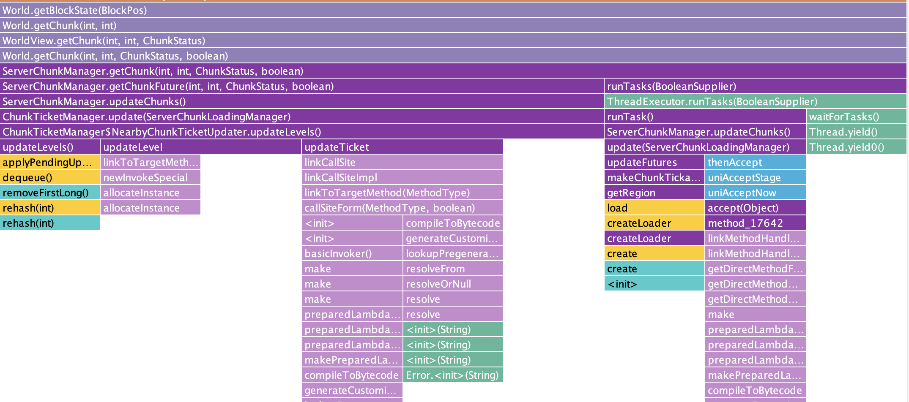

Block reading
The standard way to read data about a block in MineCraft v1.21.4 Fabric is to use the following code:
World world; // The MineCraft world
int x, y, z; // The block you're interested in
BlockPos blockPos = new BlockPos(x, y, z);
BlockState state = world.getBlockState(blockPos);
// Is Solid:
state.isSolidBlock(world, blockPos);
// Is Liquid:
!state.getFluidState().isEmpty();
// Is Climbable:
state.isIn(BlockTags.CLIMBABLE);
// Redstone Power:
world.getReceivedStrongRedstonePower(blockPos);
// Orientation:
state.get(Properties.FACING);
// etc...
This works, the problem is that it's slow.
To benchmark how slow, I ran a script that read 100 blocks randomly within a 5 chunk radius of the player and averaged the time to read. Running this on my M1 16-inch 2021 Macbook Pro, it takes around 3000000 nanoseconds per block!
That's 3 milliseconds to read the data from a single block. Imagine trying to scan the entire world to find diamonds, or reading multiple blocks in order to calculate a path from A to B.
Why is it slow?

The reason it's slow is that the code above is doing a lot of work. Let's dive into some of the things that are going on:
- We allocate a new
BlockPoson the heap, waiting for the OS to find avaialble memory. - We check if the provided BlockPos is outside of the world's height limit.
- This reads the
bottomY(direct variable access, fairly fast) - And computes the
topY(requires one addition and one subtraction)
- This reads the
- We determine which chunk the block is in
- This is fairly fast, but still requires more math: a bit shift and a "floor" operation, which is another comparison
- This bit shift + "floor" operation is done for X and Z coordinates
- We check if the current thread is the "server" thread. If not, we queue up the chunk load to be processed by the server thread
- We initialize a Profiler to measure how long chunk loading takes
- We combine the X and Z coordinates into a single 8-byte long integer with more bit shifting and masking
- We check the last 4 loaded chunks to see if one of these is the one being
accessed. If it is, we return the chunk from cache
- This turns out to be a huge time saver later. See below
- We allocate a new
ChunkPoson the heap, waiting one more for available memory - We determine if the chunk is fully generated or still processing. If still processing, we defer reading until it's complete
- We calculate which Chunk Section the block is in
- We check if the Chunk Section is empty. If so, we return the default BlockState for "AIR"
- We take the last 4 bits of the X, Y, and Z positions (the remainder when dividing the positions by 16) to find the relative location within the Chunk Section
- We defer to the "Paletted Container" to read the data in this X, Y, and Z position
At this point we still don't have the block data, but our code diverges a bit. Because a Paletted Container consists of two pieces of information:
- The "palette", containing a de-duplicated list of all blocks in the chunk section.
- The "storage", containing a list of 4,096 indexes into this palette -- one for each X, Y, and Z position.
The reason the code diverges is because based on how many unique blocks are in a chunk section, we will use one of four different palette types, and one of two different storage types.
Storage Types:
- Empty Storage: returns "0" for all positions. Very fast.
- Packed Integer Array: this is a bit more complex
So here's how Packed Integer Array works:
Suppose in your 4,096 block chunk section you have 25 distinct blocks. So most blocks are just air, grass, dirt, stone, etc. but there are a handful of less common blocks like oak logs, leaves, coal ore, flowers, etc.
All numbers from 0 to 24 can be expressed using 5 bits, so we convert every block into a 5-bit index.
Next we tightly stuff all of these 5-bit indexes together, cramming 12 blocks worth of data into a 64-bit (8-byte) long integer. That occupies 60 bits, with 4 bits of wasted space.
We create an array of these 64-bit "packed" integers, large enough to hold all 4,096 blocks in our chunk section. In this case, 4096 / 12 = 341.33 so we need 342 long integers.
Reading a single X, Y, Z value from the Packed Integer Array involves:
- Check if the value is within the bounds of the array
- Figure out which long integer holds the desired bits
- Read that integer from RAM
- Mask out the desired bits
- Shift those bits into the desired position
Palette Types:
- Singular Palette: contains a single block state. For example, all blocks in
the chunk section are AIR
- Just returns the single block state
- Array Palette: contains an array of block states
- Once you have the index for a particular block, you simply access that index in the array
- BiMap Palette: contains a bi-directional hash map between integer and block
states
- Truthfully I don't know why or when this is preferred by the MineCraft engine, but I do know that internally it also uses an array
- IdList Palette: contains an array of block IDs
- Again, I don't really know why or when this is preferred
For the most part reading from these palettes always comes down to a simple
array lookup. However the .get() method often also checks that the index
requested is within the bounds of the palette.
Now here's where things get particularly bad:
In Java, when a class method is overwritten by a child class, this is known as
polymorphism. A call to palette.get(x, y, z) might dispatch execution to
SingularPalette.get(), ArrayPalette.get(), BiMapPalette.get(), or
IdListPalette.get(). We don't know which are compile time, so it has to
determine which method to call at runtime.
The Just-In-Time (JIT) compiler is really good at optimizing and inlining bytecode for method calls on-the-fly. This means that the first time you call a function you incur fuction-call overhead (pushing parameters on the stack, setting a return pointer, moving the instruction pointer, then unwinding the stack after the function returns) but on subsequent calls all of the code of the method just works without this overhead.
The problem is that function inlining only works for monomorphic (one possible set of instructions) or bimorphic (two possible sets of instructions) methods. The moment there are three or more possible code paths (known as "megamorphic") that might need to be inlined, the JIT gives up and always dispatches a function call.
So while most of what we've done up until now can be optimized to run as fast as possible, palette lookups are always eating this overhead cost.
Whew, that's a lot
So now we know why world.getBlockState() is slow, but what can we do to speed
it up? Well there's a few tricks we have up our sleeves.
1. We only read chunks after generation

During block searches (e.g. "find diamond ores") and pathfinding (e.g. "go to position 1500, 70, -800") Orebit does not read BlockState data from the world. Instead, we rely on two separate representations of the world that are optimized for these two tasks: Regions and NavBlock Grids.
The only time we read BlockState data is when we're building or updating these two data structures, which we only do immediately after a chunk has been generated or modified. This means that the chunks we're accessing are always in the "last 4 chunks touched" cache, so we avoid the cost of chunk loading.
To benchmark this performance I updated my code. Instead of reading 100 blocks randomly within 5 chunks of the player, I read 100 blocks randomly in the last chunk that was generated. On the same hardware this immediately reduced the time to read a block to 1700 nanoseconds. That's a 1,846x speedup!
The lesson is that if you're reading multiple blocks from the same chunk, you can amortize the cost of chunk loading over all of the blocks read -- making it essentially zero.
2. We can bypass World-level checks

Because we're hooking into chunk generation and updates, we have an instance of the Chunk already available to us. This means we can skip straight to the last few steps of reading our data, bypassing things like world height checks, thread safety checks, and ChunkPos calculation. This is done using code like so:
World world; // The world the chunk resides in
Chunk chunk; // The chunk that just loaded
int x, y, z; // The block you're interested in
int minY = world.getBottomY();
int sectionIndex = (y - minY) / 16;
BlockPos blockPos = new BlockPos(x, y, z);
BlockState state = chunkSections[sectionIndex].getBlockState(x & 0x0F, y & 0x0F, z & 0x0F);
state.isSolidBlock(world, blockPos);
I updated my code once again and moved it into the CHUNK_LOAD callback. With
the latest changes the time to read a single block's data was down to 700
nanoseconds. That's another 2.4x speedup!
But we can keep going:
3. Eliminate memory allocation

Some amount of time is spent allocating memory for the BlockPos object that we're creating. However reading the actual BlockState doesn't require this BlockPos any longer now that we're using the ChunkSection API. So why do we still need it?
It turns out some blocks have behavior that changes at runtime. A good example of this is the piston arm. The piston arm may be solid, or may not be solid, depending on whether or not it's moving. In order to know if a particular piston arm is moving, we query the world for the specific piston arm at a specific location. Our world queries rely on these BlockPos values.
The naive approach here may be to check for these blocks and avoid allocation of a BlockPos all together, with something like this:
BlockState state = ...;
Block block = state.getBlock();
if (block is PistonExtensionBlock) {
// Assume solid
return true;
} else {
// Most blocks "isSolidBlock" methods don't actually read the "world" and
// "pos" parameters, instead returning static values
return state.isSolidBlock(null, null);
}
Of course we need to extend this to more than just piston arms. The collection of all blocks that rely on the world and BlockPos to read solidity is:
BlockWithEntity-- includes piston arms, sculk sensors, and various othersBambooBlock-- the exact location within a block for bamboo is randomizedPointedDripstone-- same as bamboo
I updated my code to check for these three block types and assume they were fully solid, eliminating the allocation of a BlockPos in memory. Now the time to read a single block is up to 900 nanoseconds! It's 28.5% slower, what gives?
Well it turns out branch prediction is hard. Every time our code hits this block it has to figure out whether we need to follow the left path or the right path, and we do this per block. So this isn't actually any faster.
Can we do something else, though? Yes, we can! MineCraft provides a
BlockPos.Mutable class! Using this we can allocate memory once and re-use it
in our loop:
World world;
BlockState state = ...;
BlockPos.Mutable pos = new BlockPos.Mutable(0, 0, 0);
// This time I'm actually showing the loop
for (int i = 0; i < 100; i++) {
int x = (random x in the chunk);
int y = (random y in the chunk section);
int z = (random z in the chunk);
pos.set(x, y, z);
sink = state.isSolidBlock(world, pos);
}
With this new code avoiding memory allocation and branching, we're down to 600 nanoseconds! A 1.17x speedup!
But... can we do even better?
4. Avoiding megamorphism

Here is where things start to get really tricky. Remember when I said that reading a palette was slow due to megamorphism? Well we can fix this!
We can access the "paletted container" of a Chunk Section like so:
PalettedContainer<BlockState> container = chunkSection.getBlockStateContainer();
This is an object that contains both the storage and palette for the raw block data. However, this data is private! So we don't normally have access to it.
Through the power of reflection, we can fix this:
static {
try {
dataField = PalettedContainer.class.getDeclaredField("data");
dataField.setAccessible(true);
Class<?> dataClass = Class.forName("net.minecraft.world.chunk.PalettedContainer$Data");
storageField = dataClass.getDeclaredField("storage");
storageField.setAccessible(true);
paletteField = dataClass.getDeclaredField("palette");
paletteField.setAccessible(true);
Class<?> arrayPaletteClass = Class.forName("net.minecraft.world.chunk.ArrayPalette");
arrayField = arrayPaletteClass.getDeclaredField("array");
arrayField.setAccessible(true);
Class<?> biMapPaletteClass = Class.forName("net.minecraft.world.chunk.BiMapPalette");
biMapField = biMapPaletteClass.getDeclaredField("map");
biMapField.setAccessible(true);
Class<?> idListPaletteClass = Class.forName("net.minecraft.world.chunk.IdListPalette");
idListField = idListPaletteClass.getDeclaredField("idList");
idListField.setAccessible(true);
} catch (NoSuchFieldException | ClassNotFoundException e) {
throw new RuntimeException("Failed to initialize reflection fields", e);
}
}
public void processChunkSection(ChunkSection chunkSection, World world) {
PalettedContainer<BlockState> container = chunkSection.getBlockStateContainer();
Object data = dataField.get(container);
PaletteStorage storage = (PaletteStorage) storageField.get(data);
Palette<BlockState> palette = (Palette<BlockState>) paletteField.get(data);
}
Now that we've hacked our way through Java's internals, we can add different code based on what type of ChunkSection we're processing:
switch (palette) {
case SingularPalette<BlockState> singularPalette -> {
// All blocks are the same!
BlockState everyBlock = singularPalette.get(0);
for (int i = 0; i < 100; i++) {
int x = ..., y = ..., z = ...;
pos.set(x, y, z);
sink = everyBlock.isSolidBlock(world, pos);
}
}
case ArrayPalette<BlockState> arrayPalette -> {
Object[] array = (Object[]) arrayField.get(arrayPalette);
for (int i = 0; i < 100; i++) {
int x = ..., y = ..., z = ...;
pos.set(x, y, z);
BlockState state = (BlockState) array[storage.get(x, y, z)];
sink = state.isSolidBlock(world, pos);
}
}
case BiMapPalette<BlockState> blockStateBiMapPalette -> {
Int2ObjectBiMap<BlockState> map = (Int2ObjectBiMap<BlockState>) biMapField.get(blockStateBiMapPalette);
for (int i = 0; i < 100; i++) {
int x = ..., y = ..., z = ...;
pos.set(x, y, z);
BlockState state = (BlockState) map.get(storage.get(x, y, z));
sink = state.isSolidBlock(world, pos);
}
}
case IdListPalette<BlockState> idListPalette -> {
IndexedIterable<BlockState> idList = (IndexedIterable<BlockState>) idListField.get(idListPalette);
for (int i = 0; i < 100; i++) {
int x = ..., y = ..., z = ...;
pos.set(x, y, z);
BlockState state = (BlockState) idList.get(storage.get(x, y, z));
sink = state.isSolidBlock(world, pos);
}
}
case null, default -> {
throw new RuntimeException("Unexpected palette type: " + palette);
}
}
This seems like a lot of code and a lot of overkill, but it gives us two big wins:
First, we have inlined the calls to palette.get(), so we now avoid function
call overhead.
Second, roughly 60% of all ChunkSections in MineCraft contain nothing but air (ChunkSections above Y = 80). This means that 60% of the time we will hit our SingularPalette, avoiding far more work.
Benchmarking all cases:
- When using a SingularPalette, the average time to read a block is down to 2.5 nanoseconds. A 240x speedup!
- When using an ArrayPalette, the average time to read a block is down to 14 nanoseconds. A 43x speedup!
- When using a BiMapPalette, the average time to read a block is down to 27 nanoseconds. A 22x speedup!
- In my testing I didn't see an IdListPalette, so I don't know when these are used.
Given that 60% of ChunkSections are using SingularPalette, the average time to read a block is now:
\(60% x 2.5 + 20% x 14 + 20% x 27 = 1.5 + 2.8 + 5.4 = 9.7\) nanoseconds.
This is a 62x speedup over the previous best case! But... the question remains... can we do better?
5. Limit reflective access

We pay a cost every time we access a field via reflection. Reflection requires Java to introspect about its own bytecode at runtime, eliminating many potential gains from the JIT compiler. While we were able to avoid megamorphism, we now incur the full wrath of unoptimized Java code for every single block we read.
So what can we do? Are we at the end of our optimization journey?
Not by a long shot!
So far we've benchmarked random access to blocks in a ChunkSection. But when we're generating our NavBlock Grid and our Regions, we're going to scan the entire ChunkSection in order. This means that after reading one block, we know the next block we're going to read is always the next one in sequence.
It just so happens that the PaletteStorage abstract class provides us with an
iterator that will loop over all values in the ChunkSection in order. This means
we only have to access the reflected field once, to call .forEach. After this,
the iterator handles everything with beautifully optimized code:
// This example is just for ArrayPalette, but the same applies to all others
case ArrayPalette<BlockState> arrayPalette -> {
Object[] array = (Object[]) arrayField.get(palette);
storage.forEach(index -> {
int x = ..., y = ..., z = ...;
pos.set(x, y, z);
BlockState state = (BlockState) array[index];
sink = state.isSolidBlock(world, pos);
});
}
We're now no longer benchmarking the average time to read 100 random blocks, but the average time to read all blocks in a ChunkSection. Dividing this by 4,096 gives us the average time per block. So what do our times look like now?
- SingularPalette: 3.5 nanoseconds
- In this case the cost of the iterator actually increases the time to read
- ArrayPalette: 10 nanoseconds
- BiMapPalette: 13 nanoseconds
- IdListPalette: no data
Our average read time per block is now:
\(60% x 3.5 + 20% x 10 + 20% x 13 = 2.1 + 2.0 + 2.6 = 6.7\) nanoseconds.
That's a 1.44x speedup over the previous. But... can we do better?
6. Maybe...
PackedIntgerArray already has a very optimal forEach method that only loads
each long integer once, then repeatedly shifts off values of the appropriate
size in order to call our method once per value.
Also recall that the JIT already optimizes and inlines functions if they are either monomorphic or bimorphic. In the case of PaletteStorage, we only have two subclasses, not four, meaning our method call is bimorphic and the JIT is able to handle this for us.
But I do have a few ideas...